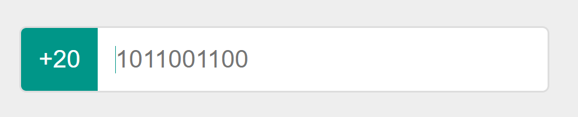

HTML الأصلي الوارد في السؤال
<div class="input-box">
<span class="prefix">+20</span>
<input type="tel" placeholder="1011001100" />
</div>ELZERO · CSS ASSIGNMENT 04
المطلوب والحل والفكرة ومعاني الرموز وشرح الأسطر في صفحة مستقلة.
<div class="input-box">
<span class="prefix">+20</span>
<input type="tel" placeholder="1011001100" />
</div>نسّق حقل الهاتف ليطابق الصورة، مع الإبقاء على HTML المعطى حرفيًا دون تعديل.

تستخدم المقارنة البنية الواردة في السؤال أو معاينة المجموعة المحفوظة. راجع نص المطلوب للتحقق من القيم المحددة.
CSS
* {
box-sizing: border-box;
}
body {
min-height: 100vh;
margin: 0;
display: grid;
place-items: center;
background: #eee;
font-family: Arial, sans-serif;
}
.input-box {
display: flex;
width: min(900px, calc(100% - 32px));
height: 110px;
overflow: hidden;
border: 3px solid #ddd;
border-radius: 12px;
background: #fff;
}
.prefix {
flex: 0 0 130px;
display: grid;
place-items: center;
color: #fff;
background: #009688;
font-size: 42px;
}
.input-box input {
flex: 1;
min-width: 0;
border: 0;
border-left: 1px solid #009688;
outline: 0;
padding: 0 28px;
font-size: 40px;
}
.input-box input::placeholder {
color: #757575;
opacity: 1;
}الحاوية display: flex تضع البادئة والحقل جنبًا إلى جنب، ويملأ الحقل المساحة الباقية بفضل flex: 1.
*يحدد العنصر الذي ستطبق عليه قواعد CSS.
bodyيحدد العنصر الذي ستطبق عليه قواعد CSS.
.input-boxيستهدف العناصر التي تحمل اسم الصنف المحدد.
.prefixيستهدف العناصر التي تحمل اسم الصنف المحدد.
.input-box inputيستهدف العناصر التي تحمل اسم الصنف المحدد.
.input-box input::placeholderيستهدف العناصر التي تحمل اسم الصنف المحدد.
box-sizingتحدد حساب أبعاد الصندوق. مثال القيمة: border-box
min-heightتحدد أقل ارتفاع. مثال القيمة: 100vh
marginتضيف مسافة خارجية. مثال القيمة: 0
displayتحدد طريقة عرض العنصر. مثال القيمة: grid
place-itemsتختصر محاذاة Grid. مثال القيمة: center
backgroundتضبط الخلفية. مثال القيمة: #eee
font-familyتحدد عائلة الخط. مثال القيمة: Arial, sans-serif
widthتحدد عرض العنصر. مثال القيمة: min(900px, calc(100% - 32px))
heightتحدد ارتفاع العنصر. مثال القيمة: 110px
overflowتحدد ما يحدث للمحتوى الخارج عن العنصر. مثال القيمة: hidden
borderترسم الحد وتحدد سمكه ونمطه ولونه. مثال القيمة: 3px solid #ddd
border-radiusتدوّر زوايا العنصر. مثال القيمة: 12px
flexتختصر نمو عنصر Flex وحجمه. مثال القيمة: 0 0 130px
colorتحدد لون النص. مثال القيمة: #fff
font-sizeتحدد حجم النص. مثال القيمة: 42px
min-widthتحدد أقل عرض. مثال القيمة: 0
min()تختار أصغر قيمة من القيم المعطاة.
calc()تحسب قيمة من تعبير رياضي، ويمكنها الجمع بين وحدات CSS المختلفة.
vhنسبة من ارتفاع نافذة العرض.
pxوحدة بكسل CSS.
{يفتح مجموعة التصريحات.
}يغلق مجموعة التصريحات.
:يفصل الخاصية عن القيمة.
;ينهي تصريح CSS.
,يفصل بين محددات أو قيم.
CSS
* {
box-sizing: border-box;
}
body {
min-height: 100vh;
margin: 0;
display: grid;
place-items: center;
background: #eee;
font-family: Arial, sans-serif;
}
.input-box {
display: flex;
width: min(900px, calc(100% - 32px));
height: 110px;
overflow: hidden;
border: 3px solid #ddd;
border-radius: 12px;
background: #fff;
}
.prefix {
flex: 0 0 130px;
display: grid;
place-items: center;
color: #fff;
background: #009688;
font-size: 42px;
}
.input-box input {
flex: 1;
min-width: 0;
border: 0;
border-left: 1px solid #009688;
outline: 0;
padding: 0 28px;
font-size: 40px;
}
.input-box input::placeholder {
color: #757575;
opacity: 1;
}الكود الكامل ثابت في العمود الأيسر أثناء التمرير، وكل سطر مشروح على حدة.
* {يحدد العنصر الذي ستطبق عليه قواعد CSS.
box-sizing: border-box;تحدد حساب أبعاد الصندوق. والقيمة هنا border-box.
}يغلق نطاق القاعدة التي بدأها المحدد.
body {يحدد العنصر الذي ستطبق عليه قواعد CSS.
min-height: 100vh;تحدد أقل ارتفاع. والقيمة هنا 100vh.
margin: 0;تضيف مسافة خارجية. والقيمة هنا 0.
display: grid;تحدد طريقة عرض العنصر. والقيمة هنا grid.
place-items: center;تختصر محاذاة Grid. والقيمة هنا center.
background: #eee;تضبط الخلفية. والقيمة هنا #eee.
font-family: Arial, sans-serif;تحدد عائلة الخط. والقيمة هنا Arial, sans-serif.
}يغلق نطاق القاعدة التي بدأها المحدد.
.input-box {يستهدف العناصر التي تحمل اسم الصنف المحدد.
display: flex;تحدد طريقة عرض العنصر. والقيمة هنا flex.
width: min(900px, calc(100% - 32px));تحدد عرض العنصر. والقيمة هنا min(900px, calc(100% - 32px)).
height: 110px;تحدد ارتفاع العنصر. والقيمة هنا 110px.
overflow: hidden;تحدد ما يحدث للمحتوى الخارج عن العنصر. والقيمة هنا hidden.
border: 3px solid #ddd;ترسم الحد وتحدد سمكه ونمطه ولونه. والقيمة هنا 3px solid #ddd.
border-radius: 12px;تدوّر زوايا العنصر. والقيمة هنا 12px.
background: #fff;تضبط الخلفية. والقيمة هنا #fff.
}يغلق نطاق القاعدة التي بدأها المحدد.
.prefix {يستهدف العناصر التي تحمل اسم الصنف المحدد.
flex: 0 0 130px;تختصر نمو عنصر Flex وحجمه. والقيمة هنا 0 0 130px.
display: grid;تحدد طريقة عرض العنصر. والقيمة هنا grid.
place-items: center;تختصر محاذاة Grid. والقيمة هنا center.
color: #fff;تحدد لون النص. والقيمة هنا #fff.
background: #009688;تضبط الخلفية. والقيمة هنا #009688.
font-size: 42px;تحدد حجم النص. والقيمة هنا 42px.
}يغلق نطاق القاعدة التي بدأها المحدد.
.input-box input {يستهدف العناصر التي تحمل اسم الصنف المحدد.
flex: 1;تختصر نمو عنصر Flex وحجمه. والقيمة هنا 1.
min-width: 0;تحدد أقل عرض. والقيمة هنا 0.
border: 0;ترسم الحد وتحدد سمكه ونمطه ولونه. والقيمة هنا 0.
border-left: 1px solid #009688;تحدد قيمة الخاصية border-left. والقيمة هنا 1px solid #009688.
outline: 0;ترسم خطًا خارج الحد. والقيمة هنا 0.
padding: 0 28px;تضيف مساحة داخلية. والقيمة هنا 0 28px.
font-size: 40px;تحدد حجم النص. والقيمة هنا 40px.
}يغلق نطاق القاعدة التي بدأها المحدد.
.input-box input::placeholder {يستهدف العناصر التي تحمل اسم الصنف المحدد.
color: #757575;تحدد لون النص. والقيمة هنا #757575.
opacity: 1;تحدد شفافية العنصر. والقيمة هنا 1.
}يغلق نطاق القاعدة التي بدأها المحدد.